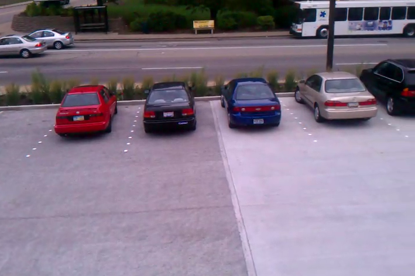

Original Purpose
Combined Sewer Systems
Original Purpose
Combined Sewer Systems
Green Learning Station

Green Learning Station
Green Learning Station

Green Learning Station

Methodology

Linksys Running OpenWRT

Sensor Relays

GPS

raw_pull.py
http = urllib3.PoolManager(maxsize=num_pools)
def pak_file(pack_num):
return 'xml/{0}.agra.xml'.format(pack_num)
def get_next_package():
global pack_lock
global package
pack_lock.acquire()
while True:
if os.path.exists(pak_file(package)):
try:
parseString(open(pak_file(package),'r').read())
sprint('Package {0} exists and is valid XML'.format(package),OK)
package += 1
except ExpatError:
sprint(write_error('Package {0} is invalid XML'.format(package),WARN))
break
else:
break